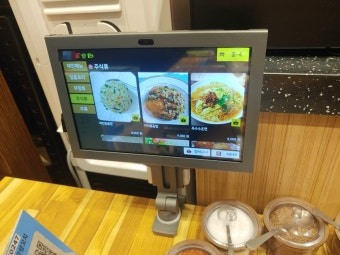
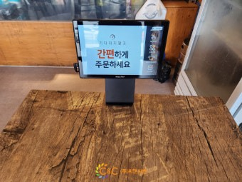

테이블오더 설치·신청 방법 총정리 — 새로 오픈하는 식당·음식점 사장님 필독

요즘 식당에 가면 테이블마다 태블릿이 놓여 있죠. 손님이 직접 메뉴를 고르고 결제까지 하는 테이블오더입니다. 새로 매장을 준비하는 사장님이라면 한 번쯤 "우리도 달아야 하나?" 고민하실 텐데, 막상 알아보려면 용어도 낯설고 업체도 많아 헷갈립니다. 설치를 다니는 입장에서 처음 오픈하는 사장님이 꼭 알아야 할 것을 순서대로 정리했습니다.
테이블오더가 뭘 해주나
테이블오더는 손님이 태블릿으로 직접 주문·결제하는 시스템입니다. 직원이 주문을 받으러 다닐 필요가 없어 홀 인건비가 줄고, 주문 누락·계산 실수가 사라집니다. 주문은 곧바로 주방 프린터와 포스(POS)로 연동돼 매출도 자동으로 잡힙니다. 손님은 부르지 않고 바로 추가 주문할 수 있어 회전과 객단가가 올라갑니다. 사진 메뉴판이라 외국인·어르신도 쉽게 주문하고요.

이렇게도 검색하세요 — 테이블오더 관련 키워드
사장님마다 부르는 이름이 다릅니다. 아래는 전부 같은(또는 밀접한) 시스템이니, 어떤 걸로 검색하셨든 상담 가능합니다.
테이블오더 · 태블릿오더 · 테이블 주문 · 테이블 결제 · 태블릿 메뉴판 · 셀프오더 · 무인주문 · 테이블 키오스크 · QR주문 · QR 오더 · 식당 태블릿 · 매장 태블릿 주문기 · 테이블 주문기 · 티오더 — 이름은 달라도 "손님이 자리에서 직접 주문·결제"하는 것이면 다 같은 계열입니다. 포스기·카드단말기·키오스크와 함께 묶어 설치하는 경우가 많습니다.
테이블오더 설치하기 좋은 업종
주문이 잦고 회전이 빠른 매장일수록 효과가 큽니다. 실제로 많이 설치하는 업종입니다.
• 고깃집·삼겹살·곱창·구이 전문점 — 추가 주문이 많아 효과 1순위
• 일반 식당·백반·국밥·찌개·분식 — 점심 회전 빠른 곳
• 횟집·조개구이·해물 전문점
• 중식당·일식당·돈까스·파스타
• 고기 무한리필·뷔페·샤브샤브 — 재주문 폭증 업종
• 술집·호프·포차·이자카야·요리주점 — 야간 추가 주문 많음
• 카페·디저트·브런치
• 프랜차이즈 가맹점 — 본사 포스와 연동 설치
• PC방·스크린골프·만화카페·스터디카페·당구장·노래방 — 자리에서 주문받는 무인형 매장
정리하면 홀에서 주문을 여러 번 받는 매장이면 거의 다 잘 맞습니다. 특히 새로 오픈하면서 처음부터 태블릿으로 세팅하면 직원 교육도 간단하고 인건비 설계도 편합니다.

새로 오픈하는 사장님, 이렇게 알아보세요
처음이라면 아래 다섯 가지만 확인하면 업체를 고르기 쉽습니다.
1) 포스(POS) 연동이 되는가 — 테이블오더 따로, 포스 따로면 매출 정산이 두 번 일이 됩니다. 포스·카드단말기·테이블오더를 한 곳에서 묶어 설치하는 게 제일 편합니다.
2) 설치비·월 이용료가 얼마인가 — 설치비 무료인지, 월 얼마인지, 태블릿 대수당 비용인지 꼭 확인하세요.
3) 구매인가 임대·렌탈인가 — 초기 부담이 크면 테이블오더 렌탈·임대로 시작할 수 있습니다.
4) A/S가 되는가 — 장사 중 먹통되면 큰일입니다. 24시간 A/S 여부를 보세요.
5) 메뉴 등록·수정을 대신 해주는가 — 오픈 전 메뉴·사진·가격 세팅을 함께 해주면 훨씬 수월합니다.
테이블오더 신청 방법 (H포스 기준)
어렵지 않습니다. ① 전화·문자로 매장 정보 전달(업종·평수·테이블 수) → ② 테이블 수에 맞는 대수·구성 상담(구매/임대/렌탈) → ③ 오픈 일정에 맞춰 방문 설치 + 포스·카드결제 연동 → ④ 메뉴 등록·직원 사용법 안내 순입니다. 신규 오픈은 가맹(카드사) 신청부터 함께 처리해 드리고, 설치비는 무료, 평균 4일 이내 방문합니다.
오픈 준비 중이면 미리 연락 주세요
인테리어 마무리 시점에 맞춰 설치하면 오픈일에 딱 맞출 수 있습니다. 매장 평수와 테이블 수, 업종만 알려주시면 몇 대가 적당한지, 구매·임대·렌탈 중 뭐가 이득인지, 월 비용은 얼마인지까지 무료로 계산해 드립니다. 테이블오더뿐 아니라 포스기·카드단말기·키오스크까지 한 번에 세팅 가능합니다. 개인사업자·법인사업자 모두 진행되고 세금계산서도 발행됩니다.
📞 테이블오더 설치 상담 010-6832-1994